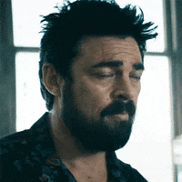
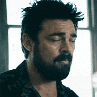

Uma série americana sobre os bastidores do Super-heróis
Sobre a série
Tudo na vida de Hughie está indo normalmente, seu relacionamento não podia estar melhor, e é nesse momento em que um Super Herói mata sua namorada por acidente no caminho para impedir um crime. Através desse acontecimento traumático, Hughie vai descobrir que o mundo dos Super Heróis não é como todos imaginam e que existem outros por aí que também sofreram “danos colaterais”, causados pelos supers e estão tão indignados quanto ele.
É bem claro para fãs de super heróis que os supers de The Boys foram inspirados nos personagens mais clássicos da DC e da Marvel. E então eles pegaram esses personagens e os transformaram em humanos normais, que têm defeitos e qualidades, com poder demais.
The Boys traz o contexto de super heróis para uma perspectiva extremamente real, nos lembrando que vivemos em um mundo capitalista e que nem mesmo humanos super poderosos estão a salvo de se tornar mercadoria.
Os garotos que dão nome à série é um grupo de homens que, impulsionados por Billy Butcher, vão tentar desmascarar a verdade por trás de toda essa bagunça. É cada situação que eles se metem… a série é cheia de momentos sérios, mas também muitos momentos engraçados.
Se você está procurando por diversas cenas de ação entre super heróis, essa não é a série para isso. De fato ela foca em criticar o mundo em que vivemos e como ele poderia corromper a pessoa mais pura. Mas existem sim muitas reviravoltas, cenas emocionantes, lutas e personagens incríveis.
"Deus abençoe a Ámerica!."
- Capitão Patria
Curiosidades da série:
- Baseada em quadrinhos
- O desenvolvedor da série é Eric Kripke, ninguém menos que o criador original da série Supernatural.
- Desde o lançamento da primeira temporada, a Amazon vem confirmado o lançamento da temporada seguinte sem ao menos estrear a temporada atual.
- Apesar de o ambiente da série se passar pelos Estados Unidos, a série é filmada inteiramente no Canadá, mais precisamente na cidade de Toronto, Ontário.
- Quatro dias antes da estreia da primeira temporada, a banda de metal Slipknot lançou um videoclipe no Youtube com cenas inéditas da série.
"Não se preocupe. Pode ficar muito mais horrível"
- Billy Brutu

Mais informações:
Você pode conhecer mais sobre a série clicando aqui